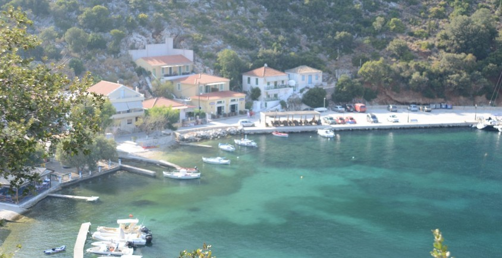
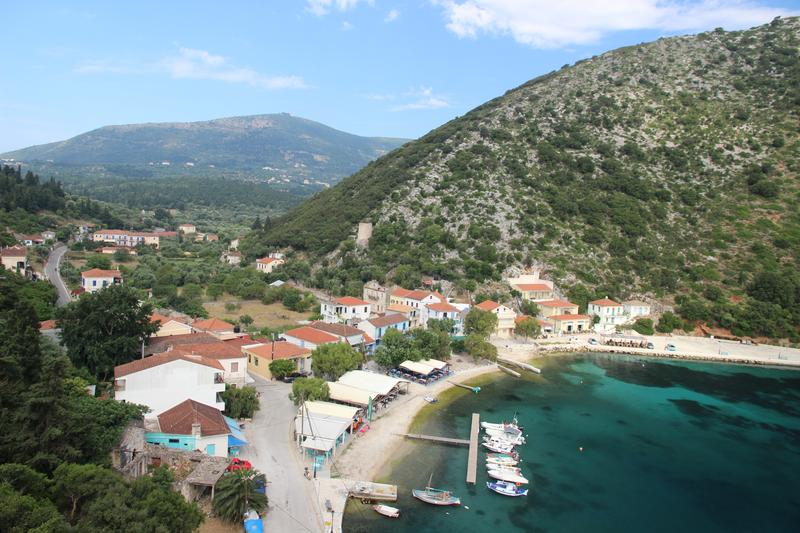

Ein ruhiges Tor zum Meer im Norden von Ithaka
Frikes ist ein kleines, charmantes Küstendorf im Norden der Insel, das sich seinen ursprünglichen Charakter bewahrt hat. Morgens kann man hier den lokalen Fischern dabei zusehen, wie sie mit ihren Netzen im Hafen anlegen. Das Dorf ist von bewaldeten Bergen umgeben und bietet eine wunderbar entspannte Atmosphäre abseits des Massentourismus.
Die Uferpromenade ist gesäumt von exzellenten Fischtavernen, in denen traditionelle griechische Gerichte direkt am Wasser serviert werden. Zudem ist Frikes der ideale Ausgangspunkt, um versteckte, unberührte Badebuchten in der direkten Umgebung zu erkunden, die nur zu Fuß oder mit dem Boot erreichbar sind.

